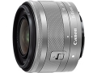

EF-M 15-45/3.5-6.3 IS STM镜头焦距换算为35mm规格，可覆盖相当于约24-72mm的视角，是一款广角能力强，同时兼顾中远摄的标准变焦镜头。
经过一段时间的使用，15-45的成像品质非常好，比我以前使用过的18-55好多了，同焦段甚至与22和40饼干头不相上下。这是被低估的镜头。
小巧玲珑是最大亮点。
估计那个塑料卡扣不稳妥，其实几百块的镜头不要奢求什么？最大的缺点的伸缩锁定口，使用起来不是很便利，当然小巧和便利不能两全其美
小巧、实用、便宜。
小巧、轻便，还有个镜头锁，真不错，大小重量仅相当于二代小痰盂。相当于2470，焦段实用，对焦安静，而且没什么色散，这点比1855好了不少。关键一点，便宜。
做工一般，光圈偏小，除了微距就别要求虚化了。锐度一般，不过也不差，中规中矩。
这是一支适合外出旅游有喜欢大场景拍摄的轻巧镜头。
轻便、焦距范围适合拍摄大多数场景，成像不错。
15广角略有桶形畸变，45毫米段光圈太小。